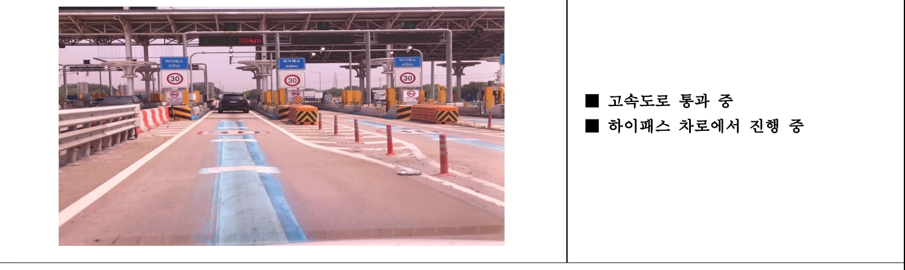

746. Hai cách lái xe nào là an toàn nhất trong tình huống sau?

- ①Sau khi tiến vào làn đường Hi-Pass, nếu muốn đi sang làn đường khác thì lùi xe rồi tìm làn đường phù hợp.
- ②Nếu không gắn thiết bị Hi-Pass, bắt buộc phải dừng lại ở làn đường Hi-Pass và thanh toán rồi mới được đi qua.
- ③Nếu muốn thanh toán bằng tiền mặt hoặc thẻ thì đổi sang làn đường tương ứng đó trước.
- ④Vì ở làn đường dành cho Hi-Pass không cần dừng lại, nên khi lái xe không cần chú ý đến các xe đang chạy phía trước.
- ⑤Khi đi qua làn đường Hi-Pass, phải lái xe an toàn với tốc độ dưới 30 km/giờ.
Xem đáp án
Đáp án
③ Nếu muốn thanh toán bằng tiền mặt hoặc thẻ thì đổi sang làn đường tương ứng đó trước.
⑤ Khi đi qua làn đường Hi-Pass, phải lái xe an toàn với tốc độ dưới 30 km/giờ.
Căn cứ
Bạn không được băng qua đường, quay đầu xe hoặc đi lùi trên đường cao tốc (Điều 62 Luật Giao thông Đường bộ). Ngay cả khi không cài đặt thiết bị đầu cuối Hi-Pass, việc giải quyết sau vẫn có thể xảy ra sau khi vượt qua làn đường Hi-Pass mà không dừng lại. Bạn sẽ không dừng ở làn Hi-Pass mà phải lái xe đồng thời chú ý đến tình huống phía trước vì xe phía trước có thể giảm tốc độ đột ngột. Khi lái xe qua làn Hi-Pass, việc vượt với tốc độ dưới 30 km/h là an toàn.
Phần căn cứ là bản dịch máy để tham khảo.